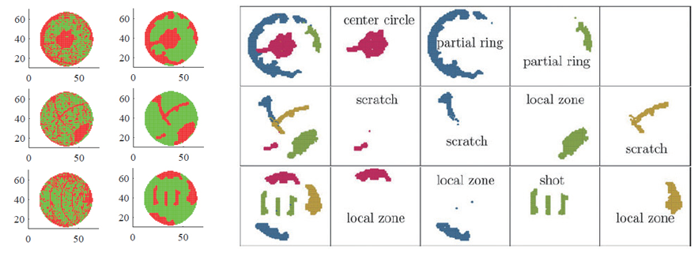

Report by Subjects
Report by Subjects
KAIST RESEARCH ACHIEVEMENTS
Detection and Clustering of Mixed-type Defect Patterns in Wafer Bin Maps
Department of Industrial and Systems Engineering Heeyoung Kim
Summary
In semiconductor manufacturing, a wafer bin map (WBM) is a map that consists of assigned bin values for dies based on wafer test results. The bin values of adjacent dies in WBMs are often spatially correlated, forming certain systematic defect patterns. These non-random defect patterns occur because of assignable causes; therefore, it is important to identify these systematic defect patterns in order to know the root causes of failure. As wafer-fabrication processes have become more complicated, mixed-type defect patterns occur more frequently than in the past. There are several challenges in the detection and clustering of mixed-type defect patterns: 1) determining the number of clusters, 2) the clustering of defect patterns of complex shapes, and 3) the separation of random defects from systematic defect patterns. In this study, we propose a new filtering method to remove random defects, and a clustering method that clusters mixed-type defect patterns of complex shapes using their simpler latent shapes with the number of clusters automatically determined during the clustering procedure.
Background
The wafer fabrication process consists of multiple sequential processes. After the wafer fabrication, a verification test is performed on each die of a wafer to detect any process changes and to verify whether all dies meet product specifications. Based on wafer test results, each die can be assigned a binary value (e.g., a value of one for good dies and a value of zero for defective dies). The resulting spatial map of a wafer is called a wafer bin map (WBM). The bin values of adjacent dies in a WBM are often spatially correlated, forming certain systematic defect patterns (e.g., circle, ring, scratch, shot, and zone patterns).
These non-random defect patterns occur because of assignable causes. Therefore, it is important to detect and cluster systematic defect patterns in order to know the root causes of failure. As wafer-fabrication processes have become more complicated, mixed-type defect patterns (two or more different types of defect patterns occur simultaneously in a single wafer) occur more frequently than in the past. There are several challenges in detecting and clustering mixed-type defect patterns: 1) the determination of the number of clusters, 2) the clustering of defect patterns of complex shapes, and 3) the separation of random defects from systematic defect patterns. In this study, we propose a new framework for detecting and clustering mixed-type defect patterns in WBMs. To detect systematic defects before they become clustered, we propose a new filtering method called connected-path filtering. The method aims to detect paths that are longer than a prespecified threshold. The detected systematic defects are subsequently clustered using the infinite warped mixture model. This model can effectively cluster mixed-type defect patterns with complex shapes, and furthermore, the number of clusters does not need to be specified in advance and is instead automatically determined during the clustering procedure. We validated the proposed method using real data from a semiconductor company. The experimental results demonstrated the effectiveness of the proposed method in estimating the number of underlying clusters as well as in the clustering of mixed-type defect patterns.

Expected effect
Most previous studies assumed a single defect pattern in a single wafer. However, currently, mixed-type defect patterns are appearing more frequently, due to the wafer fabrication process becoming more complicated. Using the proposed method, we can effectively detect and cluster mixed-type defect patterns in WBMs. The identified defect patterns help to diagnose the root causes of failure and take actions for quality management and yield enhancement.
Research Outcomes
[Paper 1] J. Kim, Y. Lee, and H. Kim (2018), “Detection and clustering of mixed-type defect patterns in wafer bin maps,” IISE Transactions, 50(2), 99-111. (Selected as a featured article)
[Press release] J. Kim, Y. Lee, and H. Kim (2018), "Can different defect patterns be recognized when they are mixed over a wafer?," IISE magazine, January, 2018
[Press release] Featured in YTN News, YTN Science, etc.
Research Funding
National Research Foundation of Korea (NRF), 2015R1C1A1A02037090